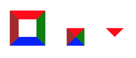
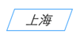
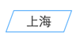

原文：用 CSS 实现三角形与平行四边形, 作者：邹润阳
最近在逛某个技术网站的时候，感觉文章关键词上的样式好酷炫啊。于是我将那种写法照搬到了我的博客中，也许最近逛过我博客的小伙伴已经发现了它出现在哪儿了——分页的样式。来张截图：
你在首页的底部也可以看到这样一个分页栏；是不是看上去还不错？下面就来看看这是如何实现的吧~
第一种方法：利用border
第一种方法是借助border属性 hack 出三角形，然后通过一个矩形拼接两个三角形最终制造出一个平行四边形。为什么使用border可以产生三角形呢？先来看看一张图片：

看了图中的三个小图形的变化过程，你应该已经清楚了一半。其实 hack 出三角形只需要两个条件，第一，元素本身的长宽为0；其次，将不需要的部分通过 border-color 来设置隐藏。通过类似的方法，你还可以创造出梯形，上图中的三个图形的代码如下。（另附 CodePen 示例）
1 2 3 4 5 6 7 8 9 10 11 12 13 14 15 16 17 18 19 20 21 22 23
| #first { width: 20px; height: 20px; border-width: 10px; border-style: solid; border-color: red green blue brown; } #second { width: 0; height: 0; border-width: 10px; border-style: solid; border-color: red green blue brown; } #third { width: 0; height: 0; border-width: 10px; border-style: solid; border-color: red transparent transparent transparent; }
|
接下来就要考虑如何拼接出一个平行四边形了。在border法中，它由三部分组成，分别是左三角形、矩形、右三角形。如果每次绘制平行四边形都要创建三个元素显然过于麻烦了，所以在这里:before和:after伪元素是个不错的选择。下面我们实现一下这样的效果：
为了将三角形与矩形无缝拼接到一起，多处属性要保持一致，所以使用类似 Less, Sass, Stylus 等 CSS 预处理器来写这段代码会更容易维护，下面给出 Scss 版本的代码。（另附 CodePen 链接）
1 2 3 4 5 6 7 8 9 10 11 12 13 14 15 16 17 18 19 20 21 22 23 24 25 26 27 28 29 30 31 32 33 34 35 36 37 38 39 40 41 42 43 44 45
| //三角形的宽高 $height: 24px; $width: 12px; //对平行四边形三部分的颜色进行赋值 @mixin parallelogram-color($color) { background: $color; &:before { border-color: transparent $color $color transparent; } &:after { border-color: $color transparent transparent $color; } } //单个三角形的样式 @mixin triangle() { content: ''; display: block; width: 0; height: 0; position: absolute; border-style: solid; border-width: $height/2 $width/2; top: 0; } //平行四边形的样式 .para { display: inline-block; position: relative; padding: 0 10px; height: $height; line-height: $height; margin-left: $width; color: #fff; &:after { @include triangle(); right: -$width; } &:before { @include triangle(); left: -$width; } @include parallelogram-color(red); }
|
需要注意的是，如果通过 $height、$width 设置的三角形斜率太小或太大都有可能造成渲染出锯齿，所以使用起来要多多测试一下不同的宽高所得到的视觉效果如何。
使用transform来实现平行四边形的方法是我在逛去啊的时候看到的，效果大概是这个样子：
看到之后觉得好神奇啊，原来还可以只有平行四边形的外轮廓。（因为方法一只能创造填充效果的平行四边形）实现起来非常简单，主要是借助了transform: skew(...)，下面就来看看源码吧。
1 2 3 4 5 6 7 8 9 10 11
| <style> .city { display: inline-block; padding: 5px 20px; border: 1px solid #44a5fc; color: #333; transform: skew(-20deg); } </style> <div class="city">上海</div>
|
于是我们得到了这样的效果：

看到图片的你一定是这样想的：
别着急嘛，我们的确是把整个 div 进行了歪曲，导致中间的文字也是倾斜的，而这显然不是我们所要的效果。所以我们需要加一个内层元素，并对内层元素做一次逆向的歪曲，从而得到我们想要的效果：

实现代码如下，另附 CodePen 示例
1 2 3 4 5 6 7 8 9 10 11 12 13 14 15 16 17
| <style> .city { display: inline-block; padding: 5px 20px; border: 1px solid #44a5fc; color: #333; transform: skew(-20deg); } .city div { transform: skew(20deg); } </style> <div class="city"> <div>上海</div> </div>
|
总结
第一种方法使用 border 属性 hack 出三角形，并通过对三个元素进行拼接最终实现了平行四边形；而第二种方法则通过 transform: skew 来得到平行四边形。总体来说，第二种方法相对于第一种代码量小得多，而且也很好理解。唯一的不足是无法构造像本站的分页中所使用的梯形。希望本文对各位有所帮助。
UPDATE